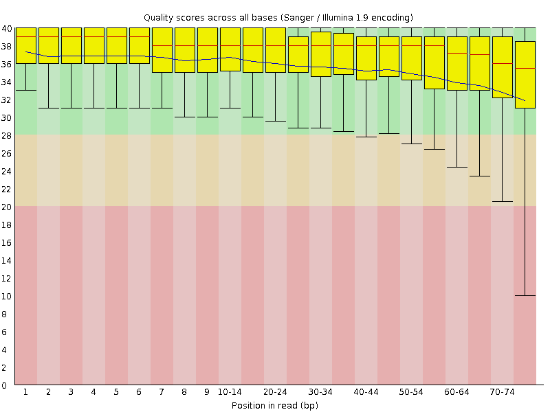
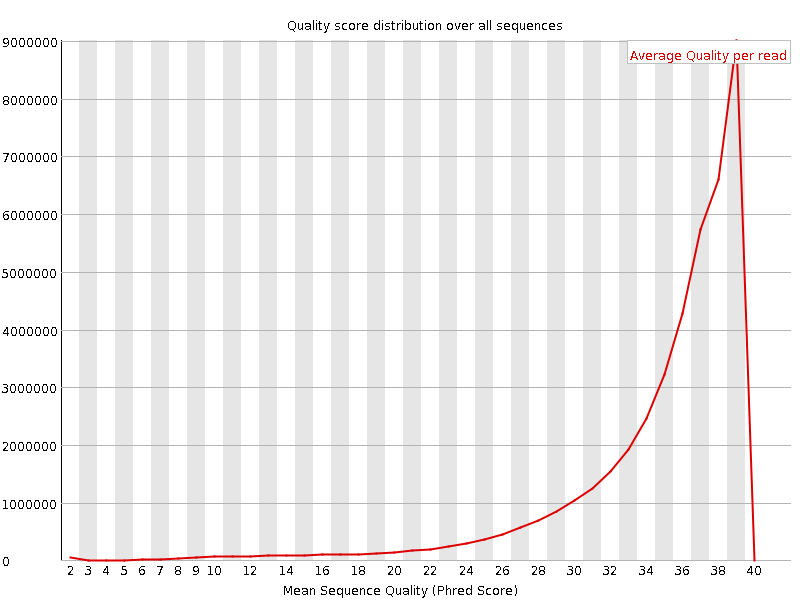
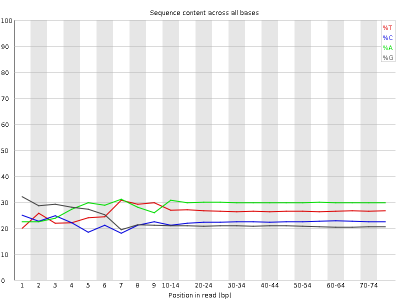
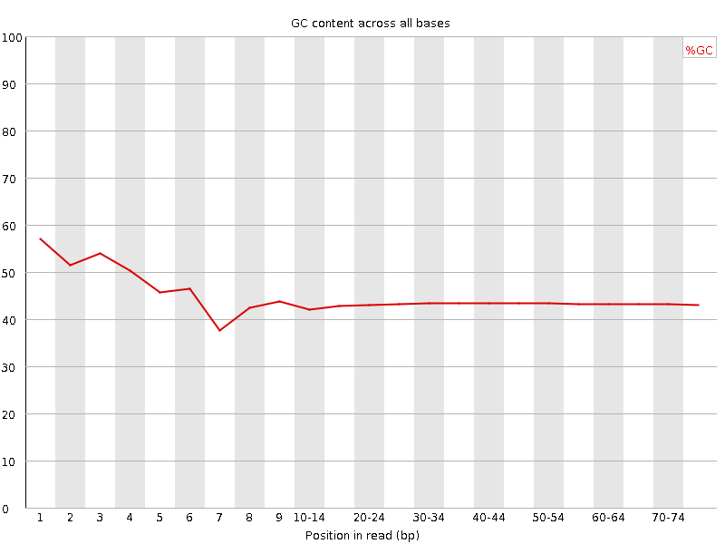
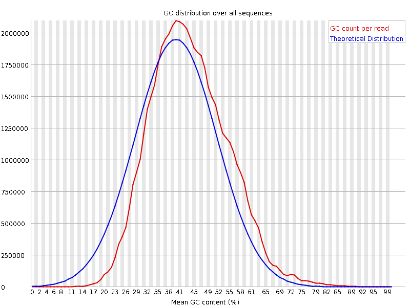
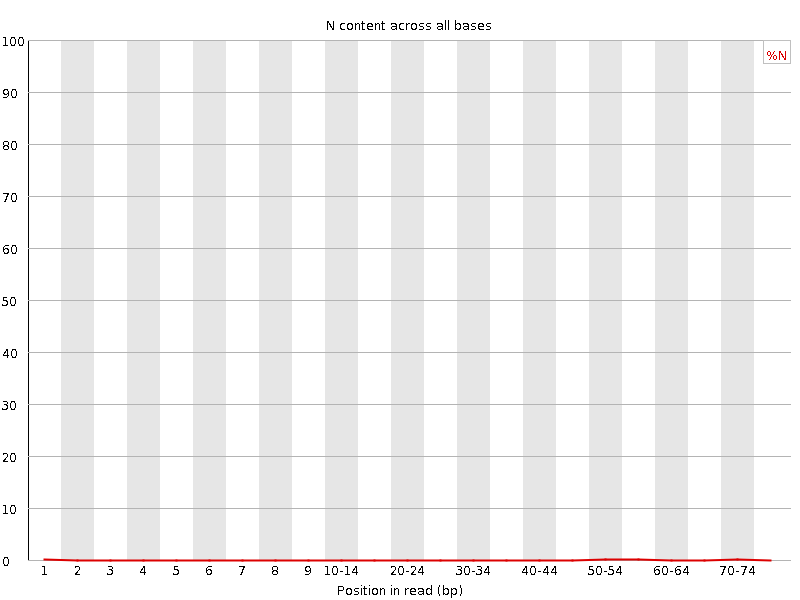
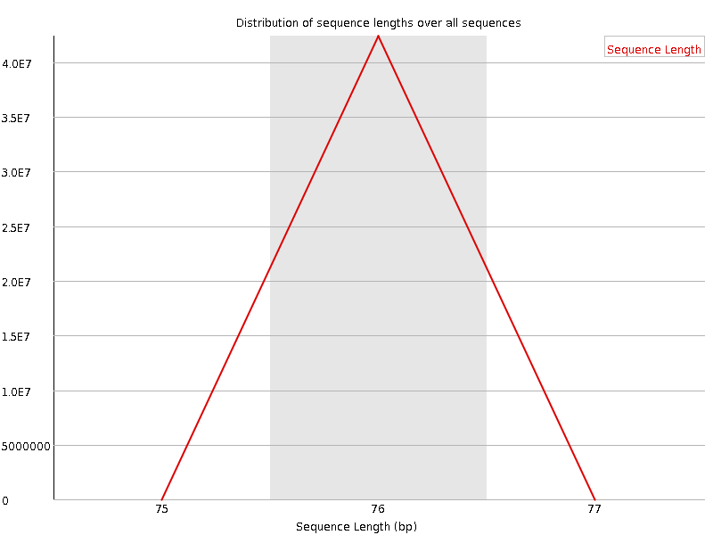
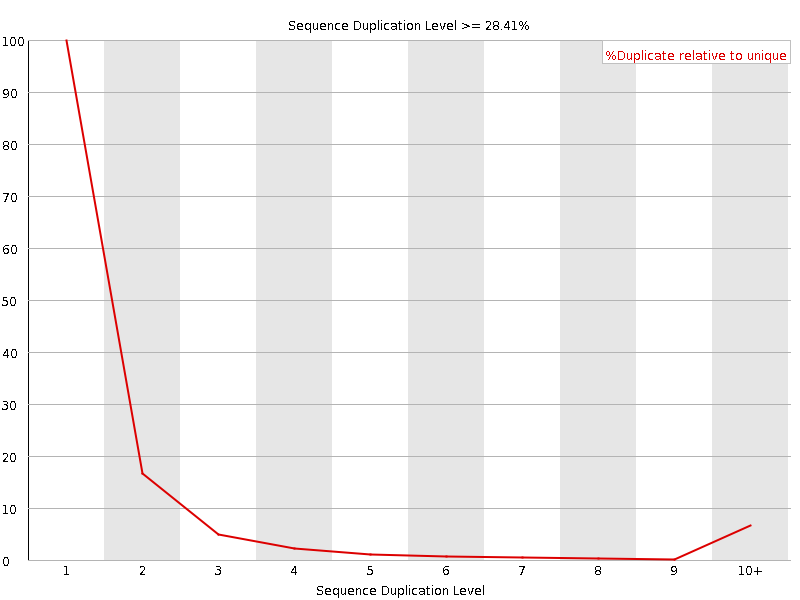

![[OK]](Icons/tick.png) Basic Statistics
Basic Statistics
| Measure | Value |
|---|---|
| Filename | SRR315309_1.fastq |
| File type | Conventional base calls |
| Encoding | Sanger / Illumina 1.9 |
| Total Sequences | 42375196 |
| Filtered Sequences | 0 |
| Sequence length | 76 |
| %GC | 43 |
Per base sequence quality

Per sequence quality scores

![[WARN]](Icons/warning.png) Per base sequence content
Per base sequence content

![[FAIL]](Icons/error.png) Per base GC content
Per base GC content

Per sequence GC content

Per base N content

Sequence Length Distribution

Sequence Duplication Levels

Overrepresented sequences
No overrepresented sequences
Kmer Content

| Sequence | Count | Obs/Exp Overall | Obs/Exp Max | Max Obs/Exp Position |
|---|---|---|---|---|
| TTTTT | 12414745 | 3.0944755 | 4.5026875 | 5 |
| CTGGG | 5160860 | 2.894615 | 9.16379 | 1 |
| GGAGG | 5364320 | 2.8109848 | 7.31261 | 2 |
| GCTGG | 4483365 | 2.5146227 | 8.063498 | 1 |
| GGCTG | 4459305 | 2.5011277 | 5.999742 | 1 |
| GGGAG | 4766950 | 2.497954 | 8.685196 | 1 |
| GGGGG | 3357770 | 2.4313834 | 13.962047 | 2 |
| GGCAG | 4305105 | 2.16284 | 6.3491535 | 1 |
| GGGGA | 3967515 | 2.079038 | 10.427213 | 1 |
| TGGGA | 4880920 | 2.0664022 | 5.0296984 | 2 |
| TGGGG | 3512370 | 2.0548124 | 8.408488 | 1 |
| GGGAA | 5186035 | 1.9666206 | 5.6706624 | 1 |
| GTGGG | 3275505 | 1.9162412 | 9.836532 | 1 |
| GGGCA | 3397655 | 1.7069464 | 5.6054697 | 1 |
| GGGGC | 2404100 | 1.6689829 | 6.8507366 | 2 |
| GGGTG | 2831070 | 1.6562371 | 5.95778 | 2 |
| GGGGT | 2727225 | 1.5954853 | 8.521541 | 3 |
| GGGCT | 2778800 | 1.5585687 | 5.708352 | 3 |
| CGGGG | 1885840 | 1.3091947 | 10.640249 | 1 |
| GGGTT | 2445405 | 1.1558249 | 5.044147 | 3 |
| GGCGG | 1576470 | 1.0944227 | 6.475424 | 1 |
| GCGGG | 1471315 | 1.0214217 | 6.794412 | 1 |